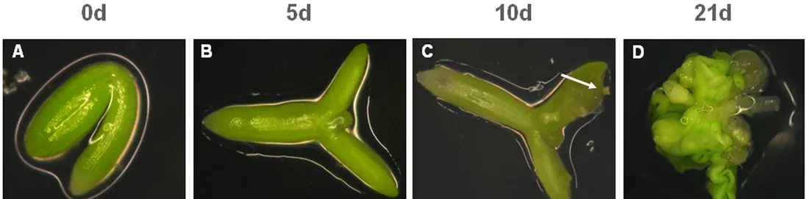
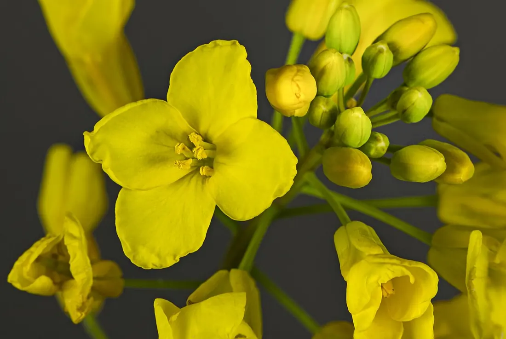
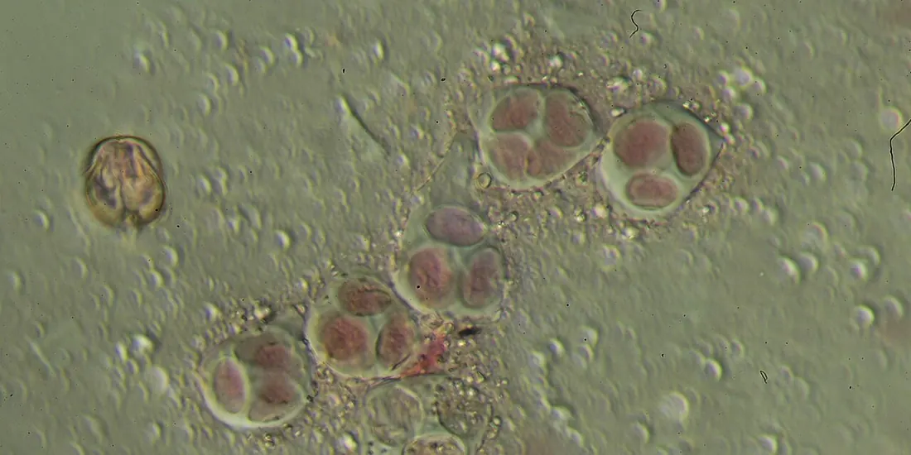
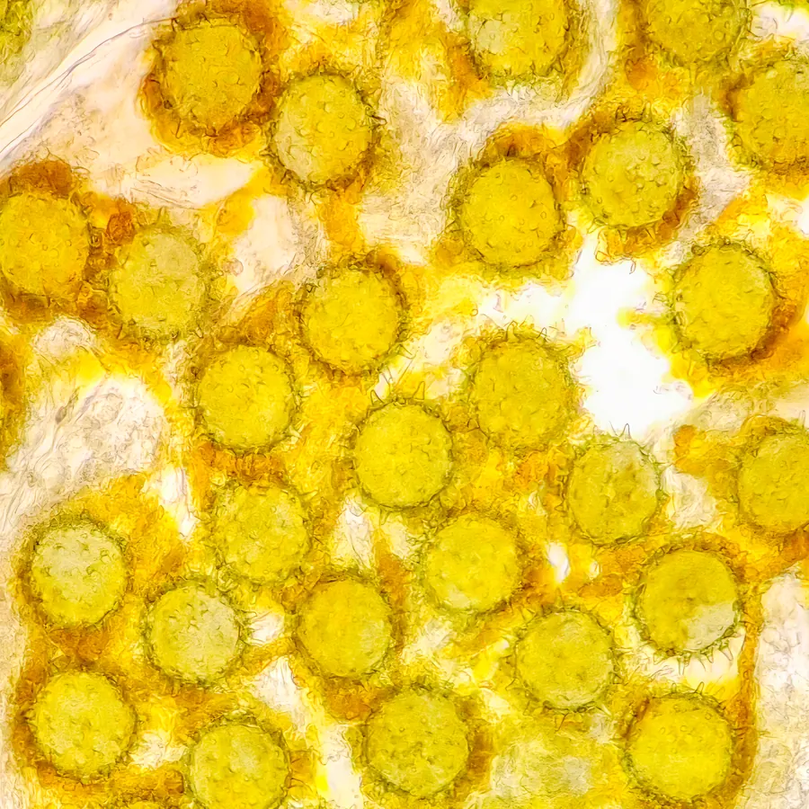

01Мета і план
Мета
Опанувати методи культури in vitro (у пробірці, поза організмом), які прискорюють селекцію: отримання гаплоїдів із чоловічого (андрогенез) і жіночого (гіногенез) гаметофітів та вирощування ізольованих зародків (ембріокультура).
Знадобиться
Квітучі рослини ріпаку, квіткові бруньки й насіння цукрового буряка, 70 % етанол, розчин діоциду, 0,1–0,5 % розчин сулеми, стерильна дистильована вода, пінцети, ланцети, 3 % ацетокармін, предметні й покривні скельця, мікроскоп, ламінар-бокс, пеніцилінові флакончики й пробірки з живильними середовищами.
Що дізнаєтеся
- чому стадія мікроспори вирішує успіх культури пиляків і як її визначити за розміром бутона;
- як гаплоїд стає фертильним дигаплоїдом і чому це скорочує селекцію;
- як підібрати час ізоляції й стерилізацію для гіногенезу;
- чому незрілому зародку потрібне «солодше» середовище.
02Теоретичні відомості
Несумісність при схрещуванні і як її долають in vitro
Цінні ознаки часто є в диких родичах культурних рослин, але при віддаленій гібридизації (схрещуванні різних видів чи родів) запліднення або розвиток гібрида зриваються. Розрізняють два бар'єри (с. 132):
- Прогамна несумісність — запліднення не відбувається: пилок дозріває не одночасно з маточкою, пилкова трубка закоротка або її ріст блокується. Її долають заплідненням in vitro: зав'язь з нанесеним пилком культивують на агаризованому середовищі. Успіх видно за тим, що сім'ядолі й зародок швидко збільшуються; такий зародок зазвичай не переходить у спокій, а відразу проростає.
- Постгамна несумісність — запліднення відбулося, але насіння щупле й несхоже, бо розвиток зародка і ендосперму (поживної тканини насінини) розходиться в часі: ендосперм слабкий і не годує зародок. Тоді зародок ізолюють і дорощують на живильному середовищі — це ембріокультура.
Ембріокультура
Ріст ізольованого зародка проходить два етапи (с. 133): ембріональний ріст, коли зародок ще диференціюється (закладає меристеми й сім'ядолі), і проростання підрослого зародка. Для першого етапу потрібне середовище з підвищеним вмістом сахарози, амінокислотами, вітамінами й гормонами — воно заміняє ендосперм. Якщо дрібний зародок покласти на «бідне» середовище, він передчасно проростає: не завершивши ембріогенез, дає слабкий нежиттєздатний проросток.
Висока концентрація сахарози діє не лише як джерело енергії, а й осмотично. Осмотичний потенціал Ψs (наскільки розчин «відтягує» воду; що він від'ємніший, то сильніше) для розведеного розчину неелектроліту дає рівняння Вант-Гоффа:
i = 1 — ізотонічний коефіцієнт сахарози (не дисоціює); c — молярна концентрація, моль/л; w — масова частка сахарози, % (г на 100 мл); 342,3 г/моль — молярна маса сахарози; R = 0,008314 л·МПа/(моль·К) — газова стала; T — абсолютна температура, К. Для середовища ЛР 40 (30 г/л сахарози, +26 °C = 299 К): c = 0,0876 моль/л, Ψs ≈ −0,22 МПа; для 10 % сахарози — ≈ −0,73 МПа. Мінеральні солі середовища додають ще ≈ −0,1 МПа.
Ембріокультура підвищує вихід пшенично-житніх гібридів, допомагає схрещувати пшеницю з колосняком (Leymus), у цибулі — вирощувати абортивні (недорозвинені) зародки міжвидових гібридів, її застосовують у селекції томатів та інших овочевих. З гібридних зародків можна отримати калюс і розмножити цінний (часто стерильний) гібрид клонально — живцюванням пагонів, адвентивними (додатковими) бруньками чи регенерацією з калюсу (с. 133; див. тему 8 і тему 4).


Гаплоїди: навіщо вони селекціонеру
Гаплоїд — рослина з одинарним набором хромосом (n) замість подвійного (2n). У диплоїда (2n) рецесивна мутація в гетерозиготі прихована домінантним алелем (іншим варіантом того самого гена). У гаплоїда кожен ген лише в одній копії, тож будь-яка мутація відразу видна у фенотипі: генотип відповідає фенотипу, і добір можна вести прямо як за домінантними, так і за рецесивними ознаками (с. 133–135).
Гаплоїди стерильні (без пар гомологічних хромосом мейоз порушений). Якщо подвоїти набір хромосом колхіцином (алкалоїдом, що зв'язується з тубуліном і не дає утворитися веретену поділу, тож хроматиди розходяться, а клітина не ділиться), отримуємо подвоєний гаплоїд — дигаплоїд (DH, від англ. doubled haploid): фертильну рослину, у якій обидві копії кожної хромосоми однакові, тобто повністю гомозиготну. Класичним шляхом гомозиготність досягають багаторазовим самозапиленням: після k поколінь частка гомозиготних локусів (місць генів у хромосомі)
Hk — частка гомозиготних локусів у нащадків гетерозиготи F1 після k поколінь самозапилення (кожне покоління вдвічі зменшує гетерозиготність); Pk — частка рослин, гомозиготних одночасно за всіма m незалежними локусами. Для m = 20 навіть після 6 поколінь P ≈ 73 %, а дигаплоїд гомозиготний на 100 % уже в першому поколінні. Тому гаплоїди скорочують селекційний процес на кілька років.
Спонтанно гаплоїди виникають рідко — наприклад, при семігамії (поліембріонії, коли в одній насінині кілька зародків, один з яких гаплоїдний). In vitro їх отримують значно частіше, нині — більш ніж у 30 видів (с. 134). Три шляхи:
- андрогенез — гаплоїди з ізольованих пиляків, пилку чи мікроспор (чоловічий гаметофіт);
- гіногенез — з жіночого гаметофіту: незапліднених насіннєвих зачатків, зав'язей, квіток (у посібнику на с. 134 помилково надруковано «з ізольованих сім'ядоль»; правильний опис — у ЛР 39, с. 137);
- партеногенез через елімінацію хромосом — у гібридних зародках через несумісність хромосом одного з батьків втрачаються хромосоми іншого; гаплоїдні зародки дорощують на середовищі.
Гаплоїди використовують для створення гомозиготних ліній у селекції на гетерозис, отримання триплоїдів, подолання міжвидової несумісності (особливо в картоплі), попередньої селекції поліплоїдних видів на нижчому рівні плоїдності, отримання анеуплоїдів (з неповним набором хромосом) для картування генів, у квітникарстві й мутаційній селекції (с. 135). Пилкові зерна й мікроспори — зручний об'єкт і для генетичної трансформації (с. 134, 157; див. тему 11 та Конспект «Молекулярна генетика рослин»).
Андрогенез: від мікроспори до ембріоїда
У молодому пиляку закладаються мікроспорангії (пилкові гнізда), де материнські клітини пилку діляться мейозом (редукційним поділом) і дають тетради — четвірки гаплоїдних мікроспор. Звільнена мікроспора спершу одноядерна; далі мітоз ділить її на велику вегетативну і маленьку генеративну клітини, а генеративна згодом дає два спермії. Зрілий пилок вкритий екзиною (зовнішньою стійкою оболонкою) та інтиною (внутрішньою, с. 136).
In vitro мікроспора, ще не «запрограмована» на утворення гамет, може переключитися на поділ «за типом зиготи» і пройти ембріогенез — утворити ембріоїд (зародкоподібну структуру). Це прямий андрогенез, якому надають перевагу. При непрямому мікроспора дає калюс, а ембріоїди чи пагони утворюються в ньому пізніше, часто після пересадки на інше середовище; такі рослини нерідко мають іншу плоїдність (с. 134–135). Розрізняють культуру пиляків (мікроспори всередині соматичних тканин пиляка) і культуру ізольованого пилку (мікроспор), коли соматичні клітини відокремлено.
Найважливіше — стадія мікроспор: за посібником, оптимальна стадія — рання одноядерна мікроспора (с. 136). Стадію визначають на давленому препараті в ацетокарміні (барвнику, що фарбує ядра в малиновий колір), а в роботі орієнтуються на розмір бутона: пиляки одного бутона розвиваються майже синхронно. Важать також вік і умови вирощування рослин-донорів (температура, фотоперіод, освітленість) та холодова передобробка бутонів (+4 °C, 4 доби), яка сприяє переключенню мікроспор на спорофітний (зародковий) шлях розвитку.






У моделі стадію описано числом s (0 — тетради … 4 — трьохклітинний пилок), яке зростає з довжиною бутона, а мікроспори одного пиляка трохи асинхронні (нормальний розподіл). «Вікно» компетентності задано гаусіаною з максимумом на ранній одноядерній стадії; вплив холоду й температури — множниками з оптимумом у 4 доби та +24…27 °C. Це навчальне наближення до якісних вказівок посібника; реальний вихід дуже залежить від генотипу.
Гіногенез
Гаплоїди з жіночого гаметофіту отримують двома способами: затримкою запилення, коли яйцеклітина починає ділитися без запліднення, або запиленням пилком іншого виду чи пилком, опроміненим великими дозами γ-променів (такий пилок стимулює розвиток, але не передає своїх хромосом, с. 137). Найкращим вважають стан, коли зародковий мішок повністю сформований: у ньому диференційовані гаплоїдні елементи — яйцеклітина, дві синергіди й три антиподи (плюс центральна клітина з двома полярними ядрами), і їхня тотипотентність (здатність клітини дати цілу рослину) реалізується у зародок або калюс. Зародковий мішок формується з однієї археспоріальної клітини нуцелуса за 5–6 поділів, швидко — за кілька днів чи годин. Технології гіногенезу розроблено для цукрових буряків, соняшнику, пшениці (с. 138). Гіногенез особливо цінний там, де пиляки дають мало ембріоїдів або багато безхлорофільних рослин-альбіносів.
Гаплоїдна клітина, що утворюється з материнської клітини пилку після мейозу; з неї розвивається пилкове зерно.
Зародкоподібна структура, що виникла не із зиготи, а із соматичної клітини чи мікроспори, і проходить ті самі стадії: глобулярну, серцеподібну, торпедоподібну, сім'ядольну.
Рослина, отримана подвоєнням хромосом гаплоїда; гомозиготна за всіма генами й фертильна.
Жіночий гаметофіт квіткових рослин усередині насіннєвого зачатка; містить яйцеклітину.
Катіонна поверхнево-активна речовина з антисептичною дією; у посібнику — стерилізатор бутонів і маточок.
Хлорид ртуті(II), HgCl2, — дуже токсичний стерилізатор; працюють лише в рукавичках, відпрацьований розчин збирають окремо.

03Інтерактивна модель
Три вкладки — три лабораторні роботи. Змінюйте параметри й натискайте «▶ Запустити»: модель пройде дослід у прискореному часі й заповнить таблицю обліку, як у посібнику. Пояснення — у розділах «Андрогенез», «Гаплоїди», «Гіногенез» і «Ембріокультура».
Культура пиляків ріпаку (Brassica napus L.)
Оберіть бутон: мікроскоп покаже стадію мікроспор, а флакончик — що виросте з пиляків за 30 діб.
Умови досліду
| № | Сорт, гібрид | Експлантатів, шт. | З калюсом, шт. | % | З морфол. структурами, шт. | % |
|---|
Стадії мікроспор і компетентність залежно від бутона
Вихід пиляків з ембріоїдами: роль холодової передобробки
Гомозиготність: самозапилення проти дигаплоїдів (формула 2)
Колхіцин у моделі діє 24 год; подвоєння хромосом p2 = 0,15 + 0,85·(1 − e−c/0,03), де 0,15 — частка спонтанно подвоєних регенерантів; c > 0,12 % підвищує токсичність і частку тетраплоїдів (≥ 4n). Числа — навчальні.
Гіногенез цукрового буряка (Beta vulgaris L.)
Ліворуч — просвітлений насіннєвий зачаток під мікроскопом, праворуч — пробірки зі стовпчиками маточки на середовищі.
Умови досліду
Середовище: МС, кінетин 0,25 мг/л, 2,4-Д 0,1 мг/л, сахароза 100 г/л; +27 °C, 14 год світла (с. 138).
| № | Експлантатів | Асептичних | З калюсом | Морфогенних структур |
|---|
Вибір моменту ізоляції
Стерилізація: асептичність проти пошкодження тканин
Порятунок незрілого зародка
Ліворуч — зріз гібридної насінини (зародок збільшено), праворуч — флакончик з ізольованим зародком на середовищі.
Схрещування
Вікно порятунку при віддаленому схрещуванні
Потреба в сахарозі залежно від стадії зародка
Наближення моделі: довжина зародка l = 2,5/(1 + e−0,35(DAP − 14)) мм; у віддаленого гібрида ендосперм гине близько 11-ї доби після запилення (DAP — доба після запилення); оптимум сахарози w* = 3 + 9·e−l/0,3 %. Ψs — лише внесок сахарози.
04Хід лабораторних робіт
Робота 38. Ріст і розвиток пиляків у культурі in vitro (андрогенез) с. 136–137
Мета: набути навичок виділення пиляків і спостерігати їхній розвиток in vitro. Матеріал: рослини ріпаку на стадії цвітіння.
- Зрізані квітки (суцвіття) ріпаку витримайте 4 доби при +4 °C у холодильній камері.
- Пиляк з контрольного бутона розчавіть у краплі 3 % ацетокарміну й під мікроскопом визначте стадію розвитку пилку.
- Відберіть бутони, пиляки яких містять переважно одноядерні мікроспори (оптимум — рання одноядерна стадія).
- Стерилізуйте квіткові бруньки в розчині діоциду 10 хв, тричі промийте стерильною водою по 10 хв.
- Пінцетом з довгими кінцями виділіть пиляки й висадіть у пеніцилінові флакончики на середовище: макро- і мікросолі МС, вітаміни МС, Fe-хелат 5 мл, μ-інозит 100 мг, глютамін 800 мг, серин 100 мг, НОК 0,1 мг/л, 2,4-Д 0,1 мг/л, сахароза 100 г, агар 7–8 г; pH 5,5–5,6 до автоклавування.
- Інкубуйте в термостаті при +24…27 °C, освітленості 2000 лк і фотоперіоді 14 год.
- Через 25–30 діб візуально визначте частоту утворення калюсу й морфологічних структур і заповніть табл. 11.
Робота 39. Одержання гаплоїдів з жіночого гаметофіту (гіногенез) с. 137–138
Мета: одержати гаплоїдні рослини з жіночого гаметофіту. Матеріал: квіткові бруньки цукрових буряків.
- За 2–3 дні до цвітіння проведіть кастрацію материнської рослини (видалення частин квітки, щоб не відбулося запилення).
- Стовпчик маточки стерилізуйте діоцидом і тричі промийте стерильною дистильованою водою по 10 хв.
- Стерильним пінцетом перенесіть стовпчик маточки в пробірки на середовище для індукції органогенезу: макро- й мікросолі МС, вітаміни МС, Fe-хелат 5 мл, μ-інозит 100 мг, кінетин 0,25 мг/л, 2,4-Д 0,1 мг/л, сахароза 100 г, агар 7–8 г; pH 5,5–5,6.
- Культивуйте у світловій кімнаті при +27 °C і фотоперіоді 14 год.
- Через 25–30 діб визначте частоту утворення калюсу й морфологічних структур.
- Занесіть результати в табл. 12: загальна кількість експлантатів, асептичних, з калюсом, морфогенних структур.
Робота 40. Ембріокультура с. 139–140
Мета: розробити прийоми культивування ізольованих незрілих зародків цукрових буряків.
- Насіння стерилізуйте 0,1 % розчином сулеми 20 хв і тричі промийте стерильною водою по 10 хв.
- Розкладіть по 20–25 насінин у стерильні чашки Петрі на зволожений фільтр і залиште на ніч для набубнявіння.
- Стерильним ланцетом вичленуйте зародки.
- Стерилізуйте зародки 0,5 % сулемою 5 хв і відмийте стерильною водою п'ять разів по 5 хв.
- Обсушіть зародки в чашках Петрі на проавтоклавованих фільтрах.
- Перенесіть зародки в пеніцилінові флакончики на середовище: макро- й мікросолі Гамборга (середовище B5), Fe-хелат 5 мл, вітаміни МС, кінетин 0,2 мг/л, гіберелова кислота 0,5 мг/л, піридоксин 1,0 мг/л, глютамін 50 мг/л, сахароза 30 г, агар 7 г; pH 5,6.
- Перші 10 діб тримайте зародки при +10–12 °C і постійному освітленні 1,2–1,4 клк, далі — при +26 °C і 16-годинному фотоперіоді (1,2 клк).
- Занесіть результати в табл. 13 (як табл. 11).
Сулема (HgCl2) дуже отруйна: працюйте в рукавичках, зливайте відпрацьований розчин в окрему ємність для знешкодження.
05Контрольні питання
1. Що таке ембріокультура і для чого її використовують?
Вирощування ізольованого зародка на живильному середовищі. Долає постгамну несумісність при віддаленій гібридизації (коли ендосперм не забезпечує зародок), прискорює селекцію, дає змогу розмножити цінні гібриди.
2. Чим прогамна несумісність відрізняється від постгамної?
Прогамна — запліднення не відбувається (пилок, пилкова трубка); долають заплідненням in vitro. Постгамна — запліднення є, але зародок гине через слабкий ендосперм; долають ембріокультурою.
3. Назвіть способи одержання гаплоїдів in vitro.
Андрогенез (пиляки, мікроспори), гіногенез (незапліднені насіннєві зачатки, зав'язі), партеногенез через елімінацію хромосом у гібридних зародках.
4. Чому селекція на гаплоїдному рівні ефективніша?
У гаплоїда кожен ген в одній копії, тому рецесивні мутації не приховані домінантними алелями — генотип відповідає фенотипу; після подвоєння хромосом одразу отримуємо гомозиготну лінію.
5. Яка стадія мікроспор оптимальна для культури пиляків і як її визначити?
Одноядерна, найкраще рання одноядерна (с. 136). Пиляк розчавлюють у 3 % ацетокарміні й дивляться під мікроскопом; надалі відбирають бутони того самого розміру.
6. Навіщо бутони ріпаку витримують 4 доби при +4 °C?
Холодовий стрес сприяє переключенню мікроспор з гаметофітного шляху (утворення пилку) на спорофітний (поділ за типом зиготи, ембріоїд).
7. Як із гаплоїда отримати фертильну рослину? Скільки поколінь самозапилення треба для 99 % гомозиготних локусів?
Подвоїти хромосоми колхіцином — вийде гомозиготний дигаплоїд. За формулою Hk = 1 − (1/2)k: 1 − 0,57 ≈ 0,992, тобто 7 поколінь.
8. Чому незрілим зародкам потрібне середовище з підвищеним вмістом сахарози?
Сахароза заміняє ендосперм як джерело енергії і створює високий осмотичний тиск (Ψs ≈ −0,7 МПа при 10 %), що підтримує ембріональний ріст і запобігає передчасному проростанню.
9. Чому стерилізацію не можна ні скорочувати, ні подовжувати?
Закоротка — експлантати інфікуються бактеріями й грибами; задовга — стерилянт пошкоджує тканини, і вони гинуть.
06Література
- Мельничук, М. Д., & Кляченко, О. Л. (2014). Біотехнологія в агросфері: навчальний посібник. НУБіП України. С. 132–141.
- Guha, S., & Maheshwari, S. C. (1964). In vitro production of embryos from anthers of Datura. Nature, 204, 497. https://doi.org/10.1038/204497a0
- Lichter, R. (1982). Induction of haploid plants from isolated pollen of Brassica napus. Zeitschrift für Pflanzenphysiologie, 105(5), 427–434. https://doi.org/10.1016/S0044-328X(82)80040-8
- Germanà, M. A. (2011). Anther culture for haploid and doubled haploid production. Plant Cell, Tissue and Organ Culture, 104(3), 283–300. https://doi.org/10.1007/s11240-010-9852-z
- Bridgen, M. P. (1994). A review of plant embryo culture. HortScience, 29(11), 1243–1246. https://doi.org/10.21273/HORTSCI.29.11.1243
- Gliwicka, M., Nowak, K., Balazadeh, S., Mueller-Roeber, B., & Gaj, M. D. (2013). Extensive modulation of the transcription factor transcriptome during somatic embryogenesis in Arabidopsis thaliana. PLoS ONE, 8(7), e69261. https://doi.org/10.1371/journal.pone.0069261